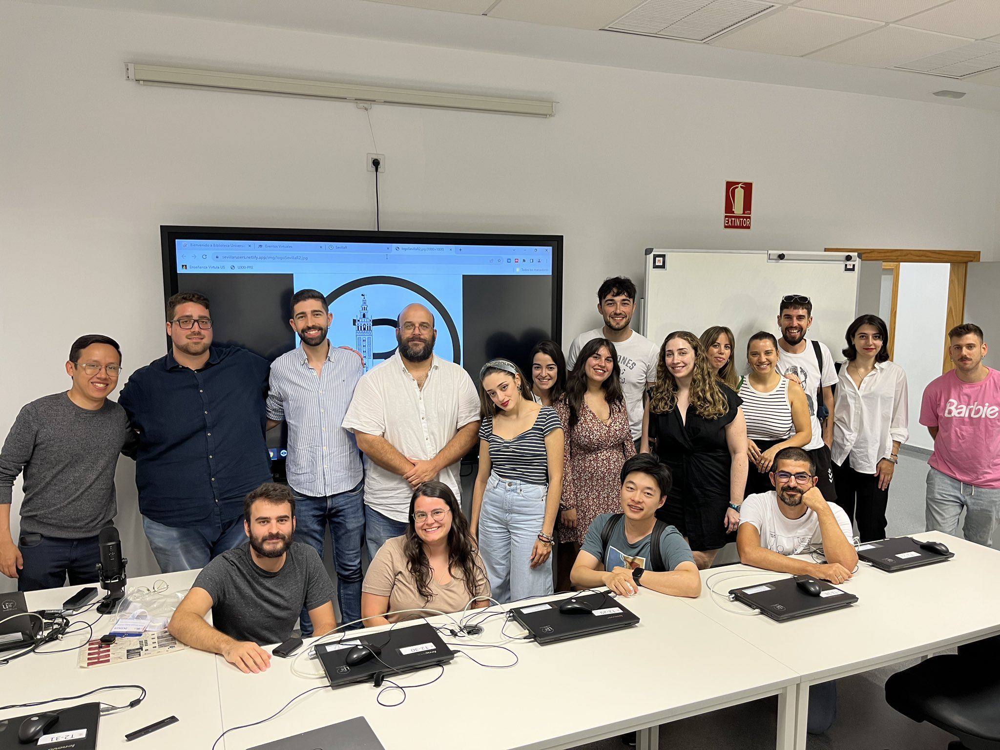

Alberto Torrejon Valenzuela, organizer of the Seville R Users Group, recently spoke with the R Consortium about the dynamic growth of the R community in Seville and the group’s role in fostering collaboration across academia and industry. Alberto shared highlights from hosting the Third Spanish R Conference, which brought together local and international participants. He discussed the group’s initiatives, including monthly workshops and online outreach through platforms like YouTube. He also reflected on his research in optimization and a collaborative project analyzing stroke prevention, showcasing how R drives innovation in scientific research and community development.

Please share your background and involvement with the RUGS group.
My name is Alberto Torrejon Valenzuela. I am from Los Barrios, a town in Cádiz, southern Spain. I have moved to Seville, which is a bit further north, where I studied for a double degree in Mathematics and Statistics. During my studies, one of my professors introduced me to R. Although I was learning several programming languages, I realized that I could accomplish everything I needed with just R. Since then, I have continued to use it throughout my studies.
I also joined the R group in Sevilla, which I discovered through Meetup. It was another motivation to enhance my R skills. The Sevilla R Users Group meets at the University of Sevilla’s facilities every one to two months. During these meetings, we discuss our work and share our experiences. Our group includes many users from academia and industry, making our discussions very diverse. We enjoy discussing our various implementation packages and applications; hearing from both perspectives is always interesting.

Your Group recently hosted the Third Spanish R Conference. Please share some details about the event.
The Third Spanish R Conference took place from November 6 to 8 in Seville, co-organized by the Institute of Mathematics at the University of Seville and Sevilla R group, with support from the R Consortium and several other organizations.

We used a catchy slogan for the conference: “R tiene un color especial” (R has a special color). This is a modification of the lyrics of a famous song about Seville that everyone in Spain knows. It became a hit!
The conference featured a wide range of activities from both scientific and social perspectives. We had four plenary speakers: Jakub Nowosad, from University of Münster, and Hannah Frick from POSIT, along with national speakers Rosana Ferrero, who is very active in social networking, and Javier Tejedor Aguilera from Endesa, who represents the industry.

Additionally, it’s important to mention that the group recognized the contributions of two founding members, Francisco Rodriguez-Sanchez and Jerónimo Carranza, during the conference. We honored them with a gift to acknowledge their hard work.

Any techniques you recommend using for planning for or during the event? (Github, zoom, other) Can these techniques be used to make your group more inclusive to people that are unable to attend physical events in the future?
Organizing a conference, like the one in Spain, is quite a significant undertaking. In addition to the conference, the group hosts monthly meetings called “TalleR”, the Spanish word for workshop. We typically emphasize the “R” at the end of the word. We exchange knowledge about our packages and various other topics during these meetings.
We primarily use social networks to connect with the local community, including the former Twitter (now known as X), BlueSky, and LinkedIn. We rely on our Meetup page to organise the event, where we post details about our seminars or talleres. People can indicate whether they will attend in person or online, making this a helpful tool. Additionally, since some members are researchers and professors in the University of Seville, we have support from Microsoft Teams to stream and record these meetings, as many participants come from South American and Spanish-speaking countries. For example, in our last meeting, we had attendees from Panama and Colombia.

After the meeting, we usually post our recordings on our YouTube channel. Every session is recorded there. We also have a website and a Telegram group where we engage in more active discussions. This is mainly for our meetings.
However, as you mentioned, organizing a large conference like the Spanish R Conference requires additional support. We received this support from the Institute of Mathematics at the University of Seville, which provided significant assistance regarding the location and logistics of our conference. Since our successful collaboration with the Institute of Mathematics, our local group has been keen to maintain and expand this partnership to enhance our meetings held at the Institute.
Additionally, a significant portion of our support came from the Spanish Association known as R-Hispano. They provided valuable tools and assistance when co-organizing our events, which has been incredibly helpful. We’re also thankful for financial support from the R Consortium.
How do you use R for your work?
I use both R and Python for my research. I have two distinct lives: a professional and a personal one. In my free time, I enjoy programming, and I also need to program in my professional life. My research focuses on optimization.
Optimization models aim to find the best solution to a given problem. I work in a lab run by Justo Puerto, a full professor in the Department of Statistics and Operations. One of the primary areas I’m involved in is ordered optimization, which involves sorting procedures to identify the best solutions to various combinatorial and decision optimization problems.
We study numerous problems, ranging from logistics issues, such as resource or facility location problems, to statistical issues like linear regression or efficient statistics computation. The framework of ordered optimization allows us to generalize these problems to include abstract concepts such as equity or minimizing envy among clients. For instance, we can optimize the location of a supermarket, hospital, voting center, or bus and train lines, ensuring equitable access so that no one feels envious of their neighbors.
Additionally, we apply these algorithms to statistical problems to improve the computation or estimators. The optimization community is familiar with Python algorithms and packages, but the R community is catching up. I use several R packages, including ROI and OMPR, allowing comprehensive data analysis.
Please share about a project you are working on or have worked on using the R language. Goal/reason, result, anything interesting, primarily related to your industry?
I am discussing a topic that highlights one of R’s best uses in boosting and supporting community initiatives. Since I work at the Institute of Mathematics, a research team from Hospital Universitario Virgen Macarena contacted us for statistical support. I was the first to volunteer, and we signed a collaboration contract to begin our work.
The project I’m currently involved in focuses onstudying and preventing strokes through analyzing large databases. Stroke is one of the worst medical conditions from the point of view of rapid care for the affected person because when it occurs, there is usually a very short period of time until brain death is reached. Timely care is essential for improving outcomes.
This research is crucial for the team led by Joan Montaner, which is focused on finding the best combination of drugs for stroke prevention. They aim to provide effective medications to individuals diagnosed with a stroke to improve their chances of survival, especially within the critical first 24 hours.
The team has access to a historical dataset of more than 100,000 patients, and I am analyzing this data using our software tools. We are uncovering some interesting insights, and we hope this information will assist them in testing these drug combinations. Ultimately, we aim to help develop more extensive protocols for administering these medications to patients.
How do I Build an R User Group?
R Consortium’s R User Group and Small Conference Support Program (RUGS) provides grants to help R groups organize, share information, and support each other worldwide. We have given grants over the past four years, encompassing over 76,000 members in over 90 user groups in 39 countries. We would like to include you! Cash grants and meetup.com accounts are awarded based on the intended use of the funds and the amount of money available to distribute